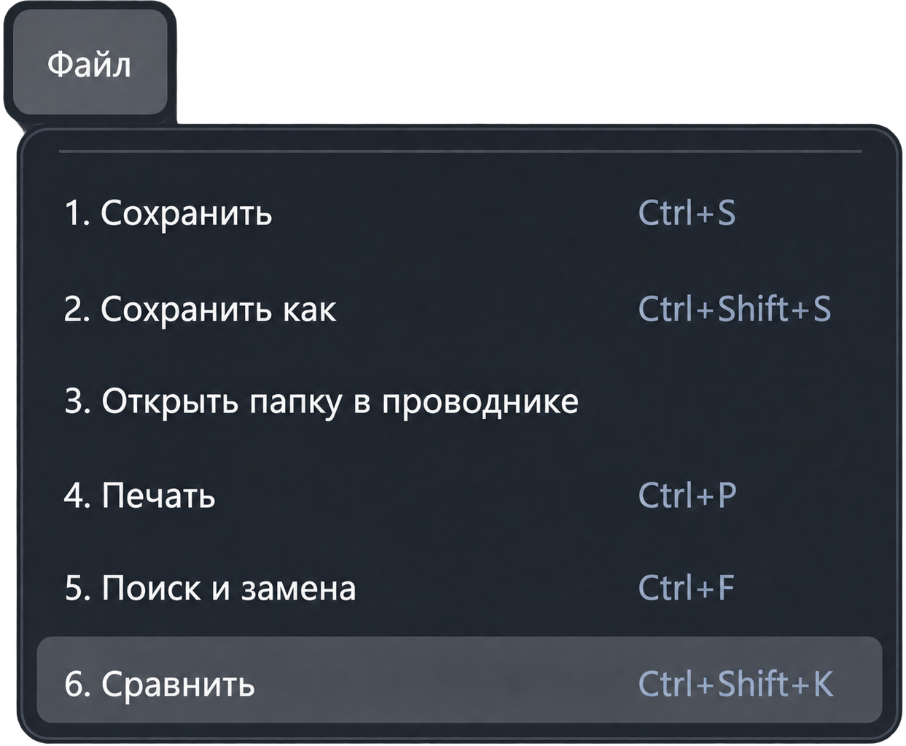
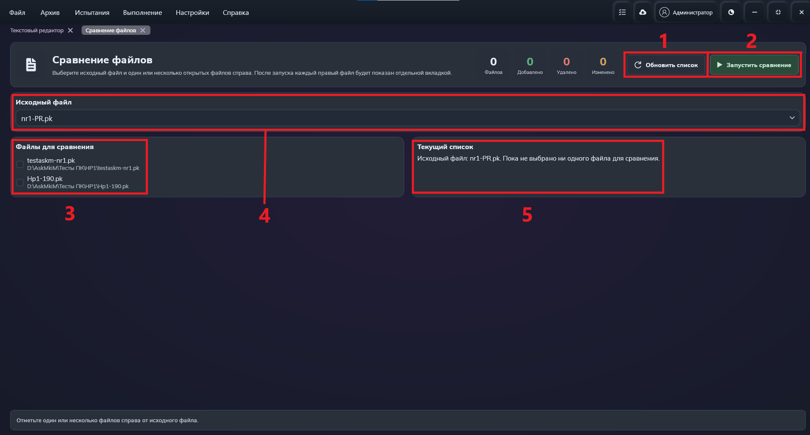
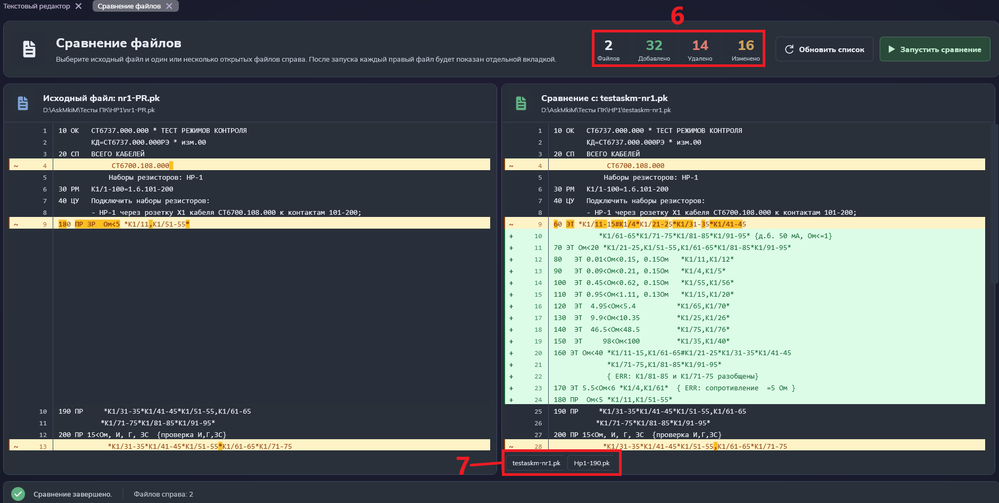

Функция "Сравнить"
Данная функция позволяет сравнить содержимое двух файлов.
ВНИМАНИЕ: данная кнопка доступна только когда открыты хотя бы два текстовых редактора !
Путь и вызов
Нахождение в программе
Верхнее меню → "Файл" → "Сравнить"
Горячие клавиши
Ctrl + Shift + KНа изображении показано нахождение данной функции в программе:

Действия после нажатия
После нажатия горячих клавиш или ЛКМ по кнопке "Сравнить" откроется окно сравнения файлов, показанное на рисунке 2.

В меню сравнения файдлов надо выбрать исходный файл для сравнения (красный квадрат №4), с которым будут сравнивать остальные файлы, и сами файлы для сравнения (красный квадрат №3).
Выбранные файлы для сравнения будут отображены в специальном окне справа (красный квадрат №5).
Примечание 1: выбор файлов для сравнения зависит от открытых текстовых редакторов в программе.
Т.е. если файл не был заранее открыт в программе, то он не будет отображен в выборке.
Примечание 2: можно выбрать несколько файлов для сравнения, но только один исходный файл для сравнения.
После настройки, нажмите кнопку "Запустить сравнение" (красный квадрат №2). Мы попадём в режим сравнения файлов, показанный на рисунке 3.

В режиме непосредственного сравнения файлов в левой части окна отображается исходный файл для сравнения, а в правой части - выбранные нами файлы для сравнения.
И в левой, и в правой части окна сравнения файлов, различия между файлами будут выделены цветом.
- Зелёный цвет обозначает добавленные строки.
- Красный цвет обозначает удалённые строки.
- Жёлтый цвет обозначает изменённые строки. Дополнительно, внутри желтой области темно-жёлтый цвет выделяются те элементы, которые были изменены.
Для удобства, в верху слева от кнопок отображается общая статистика всех изменений во всех сравниваемых файлах (красный квадрат №6).
Также, вы можете переключаться между различными файлами для сравнения. Для этого нажмите на нужный вам файл в списке, находящимся в правой части слева снизу (красный квадрат №7).
Примечание 3: если вы хотите изменить набор файлов для сравнения или исходный файл, нажмите кнопку "Обновить список" (рисунок 2, красный квадрат №1)